◆ミッションの個数
全１０個
◆クリアボーナス
物理攻撃力 ＋２０％
全１０個
◆クリアボーナス
物理攻撃力 ＋２０％
| No | ミッション名 | カテゴリ | 内容 | 報酬 | 備考 |
|---|---|---|---|---|---|
| １ | クリーチャーコレクター | アイテム所有 | クリーチャー３匹 | 力 ＋２ | |
| ２ | ミニペットコレクター | アイテム所有 | ミニペット３匹 | 運 ＋２ | 課金アイテムのリフレクティング・シャードを買う以外に ミニペットを手に入れる方法として、次のようなものがある。 ◆ダリンクエを２８番まで進める ダリンクエの 「２７．クリーチャー騒動」と「２８．ミニペットとの出会い」を終わらせると、 リフレクティング・シャード（取引不可）が１つずつ手に入る。 ◆輝石を２５個集める まず、輝石を２５個集める。 ギルドホールにいる考古学者グランに話しかけ、 １６１と選んで、輝石のかけらを輝石に換えてもらえる。 輝石のかけら１００個で輝石１個が手に入る。 輝石のかけらは、ギルドダンジョンクリア時にもらえたり、 デイリーチェックの１０日目と２０日目のボックス報酬で出たりする。 輝石が２５個集まったら ブルンギルド連合会に行き、 入ってすぐの所にいる降神術師ムシルに話しかけ、 ６１１と選んでリフレクティング・シャードに換えてもらえる。 |
| ３ | クリーチャー図鑑 | 図鑑登録 | クリーチャー図鑑１個登録 | カリスマ ＋２ | |
| ４ | ファッショニスタ | アイテム所有 | コスチューム３個 | 知識 ＋２ | ◆Nコスチューム３つでもOK ブルンギルド連合会前にいるデザイナーユノに話しかけて手に入るノーマルコスチュームを３つでもクリア出来る。 ノーマルコスチューム１つを手に入れるためには 神秘の石３つと１０万ゴールドが必要。 |
| ５ | クリーチャーコレクター２ | アイテム所有 | クリーチャー５匹 | 知恵 ＋２ | |
| ６ | ミニペットコレクター２ | アイテム所有 | ミニペット５匹 | カリスマ ＋１ | |
| ７ | ファッションキング | アイテム所有 | コスチューム５個 | 健康 ＋２ | |
| ８ | ミニペットのフレンド | アイテム所有 | ミニペット１５匹 | 敏捷 ＋２ | |
| ９ | ネフォンクリーチャーのフレンド | アイテム所有 | クリーチャー１２匹 | 力 ＋１ | |
| １０ | クリーチャー図鑑作成 | 図鑑登録 | クリーチャー図鑑３個登録 | 全てのステータス ＋１０ |
８．小さな変数 （ロック解除条件：「６．冒険家の使命」を完了）
◆ミッションの個数
全１４個
◆クリアボーナス
カリスマ レベル×１／５ 増加
全１４個
◆クリアボーナス
カリスマ レベル×１／５ 増加
| No | ミッション名 | カテゴリ | 内容 | 報酬 | 備考 |
|---|---|---|---|---|---|
| １ | 武器屋の主人オーベル | ＮＰＣと会話 | 古都のオーベルに話しかける | 知識 ＋１ | オーベルは、 古都の一番右下「製鉄所」付近（１８６，１６８）にいる。 |
| ２ | トゥンガの末裔 | アイテム使用 | ユニークアイテム１０回分解 | 知恵 ＋１ | |
| ３ | 花見 | アイテム使用 | 花５００個使用 | 運 ＋２ | |
| ４ | 億万長者への道 | 狩り | ドロップゴールド２０００万獲得 | 健康 ＋２ | PTを組んでいると、ゴールドを拾ってもカウントされないらしい。 注意。 |
| ５ | ブラインドマン | 状態異常 | 暗闇（状態異常）にかかる | 敏捷 ＋２ | 全異常抵抗、状態異常抵抗系の装備を出来るだけはずした上で、 以下の方法で暗闇になる事が可能。 他にも方法があるかもしれない。 ◆モリ５の罠扉を触る ミラーテレポータ（古都冒険者協会のロビーにいる） １１１６１ で、モリ４に飛び、そばの移動ポータルからモリ５へ。 モリ５に入って少し右下に行った所の罠扉で暗闇状態になれる。 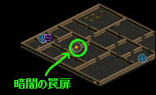 １つ手前の扉も、別の種類の罠扉なので、 異常抵抗系の装備は、暗闇の扉を触る直前にはずすとよいだろう。 なお、 罠扉は、触ってから３０秒後に復活する。 ◆ロシペル秘密に入るちょっと手前にある罠床を踏む ダメル地下遺跡に入り、 ずっと進んでロシペル秘密に入る手前の所に罠床がある。 これを踏む事により、暗闇状態になれる。 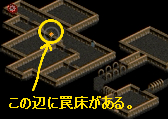 モリ５の罠扉と同様、 異常抵抗系の装備は罠床の所まで来てからはずすとよいだろう。 この罠床も、触ってから３０秒後に復活する。 |
| ６ | 軽やかな足どり | キャラ操作 | インベントリを３０個以上空ける | 力 ＋２ | |
| ７ | 道は続く | キャラ操作 | フィールド移動３０回 | カリスマ ＋２ | |
| ８ | 生と死の狭間 | 狩り・対人 | ２０回死亡する | 敏捷 ＋１ | お手軽な方法を１つ紹介する。 ミラーテレポータ（古都冒険者協会のロビーにいる） １１１８３ で、ビガ↑のマップ（ウェテンロード／ケルチ大橋付近）に飛び、 左へ進んで移動ポータルを入り、 もう１つ上のマップ（ウェテンロード／デフヒルズ東部地域）に行く。 マップに入って左方面、「燃える熱気」を通過して少し行くと草が生えている所がある。 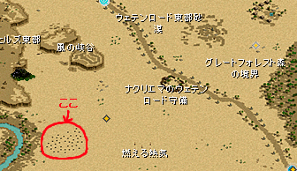 この草に触ると↓のようなメッセージが出て、 最大HPの１０％のダメージを受ける。  これを連打することで、簡単に死ねる。 |
| ９ | プシケのお嬢さん | ＮＰＣと会話 | シュトラのプシケに話しかける | 力 ＋２ | プシケは、 シュトラの中央一番下あたり（５９，１３０）にいる。 一般クエスト担当 １４５２１（水産物輸送） で直通。 |
| １０ | 探検王 | 狩り | 宝箱地図の宝箱を２０回あける | 知恵 ＋１ | |
| １１ | 洞窟の主キリアム | ＮＰＣと会話 | セントロード Ｂ１のキリアムに話しかける | 知識 ＋２ | ミラーテレポータ（古都冒険者協会のロビーにいる） １１１２２ で、ミルトリムの道／シュトラセラト入口付近に飛び、 そこから右下に進んで 「ミルトリム記念公園」の「ミ」に行く少し手前あたり （１１１，２４１）付近にある隠し入口を入る。 下地図参照。 ジグザグ型の柵の右側にある。 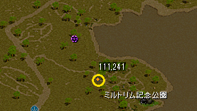 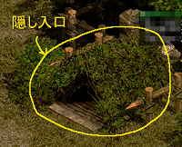 セントロードＢ１に入ったら上に進み、 ミニマップ中「主の棲み処」付近にキリアムがいる。 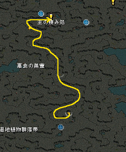 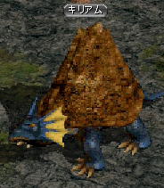 |
| １２ | ケロケロ | 状態異常 | カエル（状態異常）にかかる | カリスマ ＋２ | セイジ秘密で可能 という情報をいただいたが、 詳細にはまだ確かめられていない。 他のやり方も含めて 情報募集中。 |
| １３ | 次は誰だ | 対人 | 全職業のプレイヤーに１回殴られる | 健康 ＋２ | |
| １４ | 自分との闘い | 非戦闘 | 古都のかかしに ダメを合計１０億与える |
魔法強化 ＋３％ |
９．カウントマスター （ロック解除条件：「６．冒険家の使命」を完了）
◆ミッションの個数
全１２個
◆クリアボーナス
健康 レベル×１／５ 増加
全１２個
◆クリアボーナス
健康 レベル×１／５ 増加
| No | ミッション名 | カテゴリ | 内容 | 報酬 | 備考 |
|---|---|---|---|---|---|
| １ | 能力値総合５００達成 | ステータス | ステ増加値の合計が５００以上 | 知識 ＋２ | |
| ２ | 転生のはじまり | 転生 | １次転生完了 | 知恵 ＋２ | |
| ３ | スキルレベル増加値１０ | スキル | ＳＬｖの増加値が１０以上 | 健康 ＋１ | |
| ４ | 能力値総合１０００達成 | ステータス | ステ増加値の合計が１０００以上 | 知識 ＋２ | |
| ５ | スキルマスター | スキル | マスターしたスキルが５個 | 知恵 ＋１ | |
| ６ | 性向 ±１５ | ステータス | 性向の絶対値が１５以上 （＋１５以上または−１５以下） |
健康 ＋２ | |
| ７ | 能力値総合２０００達成 | ステータス | ステ増加値の合計が２０００以上 | 力 ＋２ | |
| ８ | スキルレベル増加値２０ | スキル | ＳＬｖの増加値が２０以上 | 力 ＋２ | |
| ９ | 一つの指輪 | アイテム獲得 | 指系のアイテムを５個獲得 | 運 ＋２ | |
| １０ | ユニークアイテム獲得 | アイテム獲得 | Ｕ（ユニークアイテム）を５個獲得 | 敏捷 ＋２ | |
| １１ | ＤＸユニークアイテム獲得 | アイテム獲得 | ＤＸＵを１個獲得 | カリスマ ＋２ | |
| １２ | 転生３次 | 転生 | ３次転生完了 | 全異常抵抗 ＋５％ |
１０．名だけを残して （ロック解除条件：「５．モンスター掃討」を完了）
◆ミッションの個数
全１１個
◆クリアボーナス
知識 レベル×１／５ 増加
全１１個
◆クリアボーナス
知識 レベル×１／５ 増加
| No | ミッション名 | カテゴリ | 内容 | 報酬 | 備考 |
|---|---|---|---|---|---|
| １ | カバンの中は余裕を持って４ | 称号保有 | ポーター Ｌｖ１０ | 力 ＋１ | |
| ２ | 探検の宿命４ | 称号保有 | マップ製作者 Ｌｖ１０ | 健康 ＋１ | |
| ３ | 奥深い場所の金庫 | 称号保有 | 銀行顧客 Ｌｖ１０ | 知識 ＋１ | |
| ４ | 熟練ハンター２ | 称号保有 | モンスター鑑別士 Ｌｖ１０ | 知恵 ＋２ | |
| ５ | かわいい子２ | 称号保有 | チャーム Ｌｖ５ | 健康 ＋１ | |
| ６ | 暴走２ | 称号保有 | ベルセルク Ｌｖ５ | 知識 ＋２ | |
| ７ | 生か死か２ | 称号保有 | サバイバル Ｌｖ２ | 力 ＋２ | 「サバイバル Lｖ２」のクエは現在実装されていないため、 Lv１をクエで取ってから、 天上界報酬「王の証書」でLv２に上げるという方法になる。 |
| ８ | 取引のスキル２ | 称号保有 | 取引人 Ｌｖ５ | 健康 ＋１ | |
| ９ | 果てしない真理 | 称号保有 | 錬金術 Ｌｖ２ | カリスマ ＋２ | |
| １０ | 限界突破 | 称号保有 | 限界突破 Ｌｖ２ | 敏捷 ＋３ | |
| １１ | 称号マスター | 称号保有 | 称号２５個保有 | 最大ＨＰ ＋３％ |
１１．モンスター討伐 （ロック解除条件：「６．冒険家の使命」を完了）
◆ミッションの個数
全１５個
◆クリアボーナス
力 レベル×１／５ 増加
全１５個
◆クリアボーナス
力 レベル×１／５ 増加
| No | ミッション名 | カテゴリ | 内容 | 報酬 | 備考 |
|---|---|---|---|---|---|
| １ | モンスター１５００匹討伐 | ＭＯＢ狩り （Ｌｖ指定） |
本体Ｌｖ−１００以上のＭＯＢを １５００匹倒す |
健康 ＋１ | |
| ２ | 動物型モンスター ５００匹討伐 |
ＭＯＢ狩り （型指定） |
動物型モンスターを５００匹狩る | 知識 ＋２ | |
| ３ | アンデッド型モンスター ５００匹討伐 |
ＭＯＢ狩り （型指定） |
アンデッド型モンスターを５００匹狩る | 運 ＋２ | |
| ４ | 神獣型モンスター ５００匹討伐 |
ＭＯＢ狩り （型指定） |
神獣型モンスターを５００匹狩る | 敏捷 ＋１ | |
| ５ | 悪魔型モンスター ５００匹討伐 |
ＭＯＢ狩り （型指定） |
悪魔型モンスターを５００匹狩る | 知恵 ＋２ | |
| ６ | モンスター２０００匹討伐 | ＭＯＢ狩り （Ｌｖ指定） |
本体Ｌｖ−１００以上のＭＯＢを ２０００匹倒す |
力 ＋２ | |
| ７ | 装甲ボーンキメラ討伐 | ＭＯＢ狩り （種類指定） |
装甲ボーンキメラを１０００匹狩る （捨てられた地下墓地 Ｂ１） |
知識 ＋２ | 対象マップは 捨てられた地下墓地 Ｂ１。 ◆捨てられた地下墓地への行き方 ファストポータル ロングテール付近の狩場 より。 マップ一番左下方面に 捨てられた地下墓地への入り口がある。 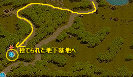 装甲ボーンキメラを１０００匹狩る。 マップ全体に多くいる。 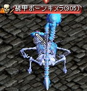 |
| ８ | 腐乱スプク討伐 | ＭＯＢ狩り （種類指定） |
腐乱スプクを１０００匹狩る （捨てられた地下墓地 Ｂ２） |
運 ＋２ | 対象マップは 捨てられた地下墓地 Ｂ２。 腐乱スプクを１０００匹狩る。 マップ全体に多くいる。 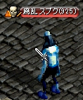 |
| ９ | モンスター３０００匹討伐 | ＭＯＢ狩り （Ｌｖ指定） |
本体Ｌｖ−１００以上のＭＯＢを ３０００匹倒す |
敏捷 ＋１ | |
| １０ | ラティアン討伐 | ＭＯＢ狩り （種類指定） |
ラティアンを１０００匹狩る （捨てられた地下墓地 Ｂ３） |
知恵 ＋２ | 対象マップは 捨てられた地下墓地 Ｂ３。 ラティアンを１０００匹狩る。 マップ全体に多くいる。  |
| １１ | 蘇った骸骨討伐 | ＭＯＢ狩り （種類指定） |
蘇った骸骨を１０００匹狩る （忘れられた地下収容所 Ｂ１） |
健康 ＋２ | 対象マップは 忘れられた地下収容所 Ｂ１。 ◆忘れられた地下収容所への行き方 ファストポータル ロングテールの娼館 飛んだ先の移動ポータルに入って ロングテールの町マップに出る。 街中を左下に進み、 マップ中央一番下付近（４１，１１２）付近に入り口がある。 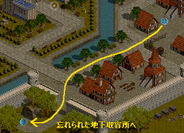 蘇った骸骨を１０００匹狩る。 マップ全体に多くいる。 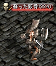 |
| １２ | アークリッチ討伐 | ＭＯＢ狩り （種類指定） |
アークリッチを１０匹狩る （忘れられた地下収容所 Ｂ１） |
物理強打 ＋２％ | 対象マップは 忘れられた地下収容所 Ｂ１。 アークリッチを１０匹狩る。 マップ左下の５つの小部屋にそれぞれいる。 ボス３で、非常に強い。 きつい(ﾟДﾟ)ｸﾜｯ 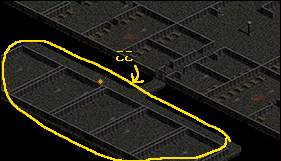 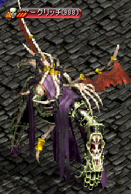 |
| １３ | 収容所デモン討伐 | ＭＯＢ狩り （種類指定） |
収容所デモンを１０００匹狩る （忘れられた地下収容所 Ｂ３） |
力 ＋２ | 対象マップは 忘れられた地下収容所 Ｂ３。 収容所デモンを１０００匹狩る。 マップ全体に多くいる。 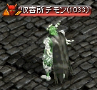 |
| １４ | ナーガプリックス討伐 | ＭＯＢ狩り （種類指定） |
ナーガプリックスを５００匹狩る （アメンアイランド） |
健康 ＋２ | 対象マップは アメンアイランド。 ◆アメンアイランドへの行き方 風の羽で直接現地に飛ぶか、 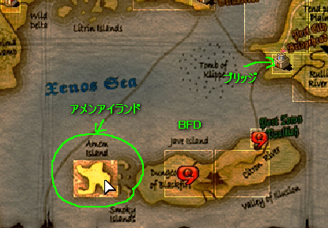 シュトラ街中の右下にいる船員に話しかけ、 ２．アメンアイランドにも行けますか？ を選択、 １万Ｇを払って現地へ行ける。  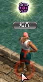 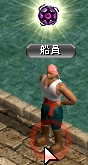対象MOBはナーガプリックス。 ５００匹狩る。 外周の砂浜のエリアにいる。 物理・知識ともにあまりダメが通らず、 地下墓地付近のＭＯＢと比べて１／２〜１／６ぐらいしか出なかった。 ＭＯＢ自体が固い・抵抗が高いのかもしれないし、 攻撃者がＬｖ９２０〜９５０ぐらいだったため、 Ｌｖ差補正で低くなっているという要素もあるかもしれない。 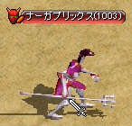 |
| １５ | ペールライト討伐 | ＭＯＢ狩り （種類指定） |
ペールライトを５００匹狩る （海底神殿 Ｂ１） |
魔法抵抗 ＋２％ | 対象マップは 海底神殿 Ｂ１。 アメンアイランドのマップ一番左下に入り口がある。 対象ＭＯＢはペールライト。 ５００匹狩る。 マップ中央の小部屋４か所に数匹ずついる。 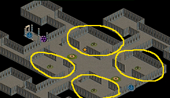 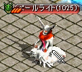 ボス３で非常に固く、イカビームの攻撃が痛い。 さらには周りにいるコロとメロウがこれまた固い、痛い。 このような環境下で、 ペールライトを５００匹も狩らなければならない。 きつい( ﾟДﾟ)(ﾟДﾟ )ｸﾜｸﾜｯ 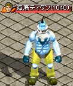 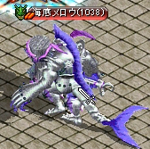 |
１２．冒険家の栄光 （ロック解除条件：「１０．名だけを残して」を完了）
◆ミッションの個数
全１５個
◆クリアボーナス
知恵 レベル×１／５ 増加
全１５個
◆クリアボーナス
知恵 レベル×１／５ 増加
| No | ミッション名 | カテゴリ | 内容 | 報酬 | 備考 |
|---|---|---|---|---|---|
| １ | 協会デイリークエスト 配達クリア |
クエ完了 | 協会クエスト 「伝達任務」 |
敏捷 ＋１ | |
| ２ | 協会デイリークエスト 討伐クリア |
クエ完了 | 協会クエスト 「討伐任務」 |
健康 ＋１ | |
| ３ | 栄光の決闘 | ＰＶＰ | ＰＶＰ決闘で３回勝利する | 知識 ＋２ | |
| ４ | 秘密ダンジョンクリア | 秘密 | 秘密に合計３回行く | 健康 ＋１ | |
| ５ | ギルドダンジョンクリア | ギルドダンジョン | ギルドダンジョンに合計３回行く | 知恵 ＋２ | |
| ６ | クリーチャー決闘参加 | クリーチャー | クリーチャーＰＶＰを５回行う | カリスマ ＋１ | |
| ７ | クリーチャー冒険 | クリーチャー | クリーチャーを５回冒険に行かせる | 力 ＋２ | |
| ８ | ギルドポイント戦 | ギルド | Ｐ戦（ギルドポイント戦）に１回参加する | 敏捷 ＋２ | |
| ９ | 試練のダンジョン参加 | 試練 | 試練のダンジョンに合計４回行く | 知識 ＋２ | |
| １０ | 栄光の決闘２ | ＰＶＰ | ＰＶＰ決闘で１０回勝利する | 知恵 ＋１ | |
| １１ | 秘密ダンジョンクリア２ | 秘密 | 秘密に合計１０回行く | カリスマ ＋１ | |
| １２ | ギルドダンジョンクリア２ | ギルドダンジョン | ギルドダンジョンに合計１０回行く | 力 ＋２ | |
| １３ | ケルベロスとの対決 | レイド | ケルベロスにダメを合計１０００万与える | ＰＶＰ攻撃 ＋３％ | |
| １４ | 骸骨王との対決 | レイド | 骸骨王にダメを合計１０００万与える | 敵致命打抵抗 −３％ | |
| １５ | ドラゴートとの対決 | レイド | ドラゴートにダをメ合計１０００万与える | ＰＶＰ防御 ＋３％ |